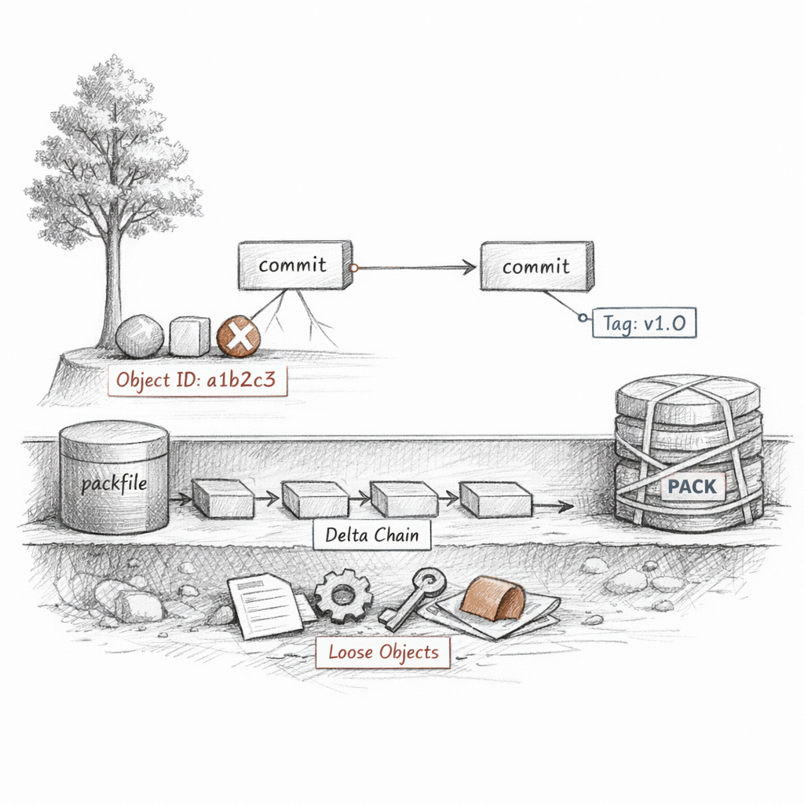
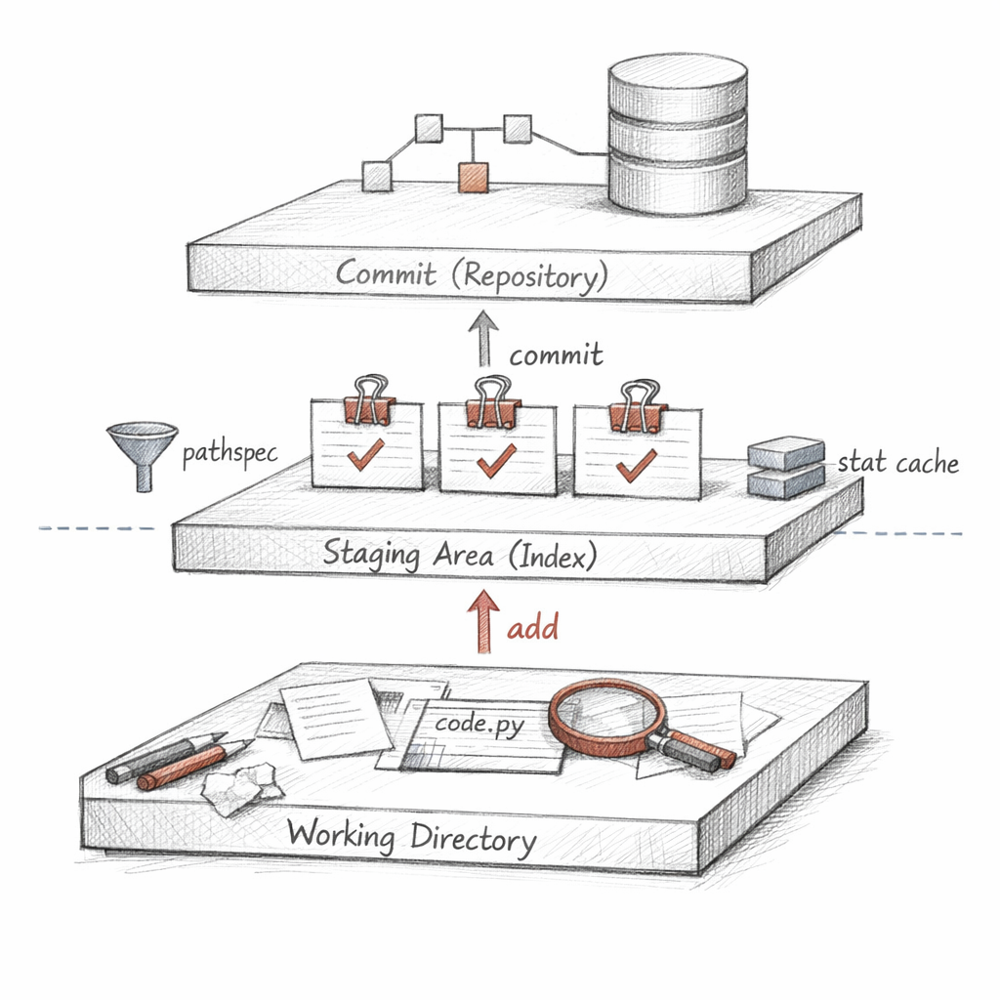
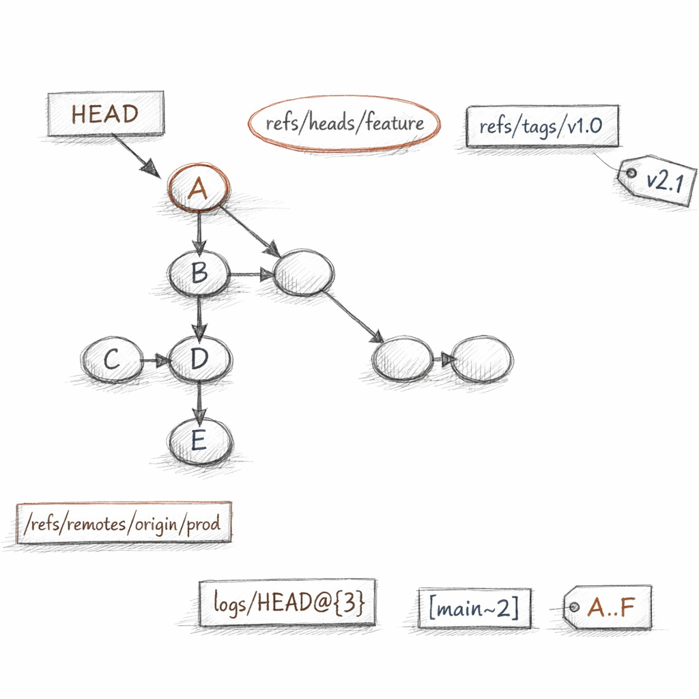
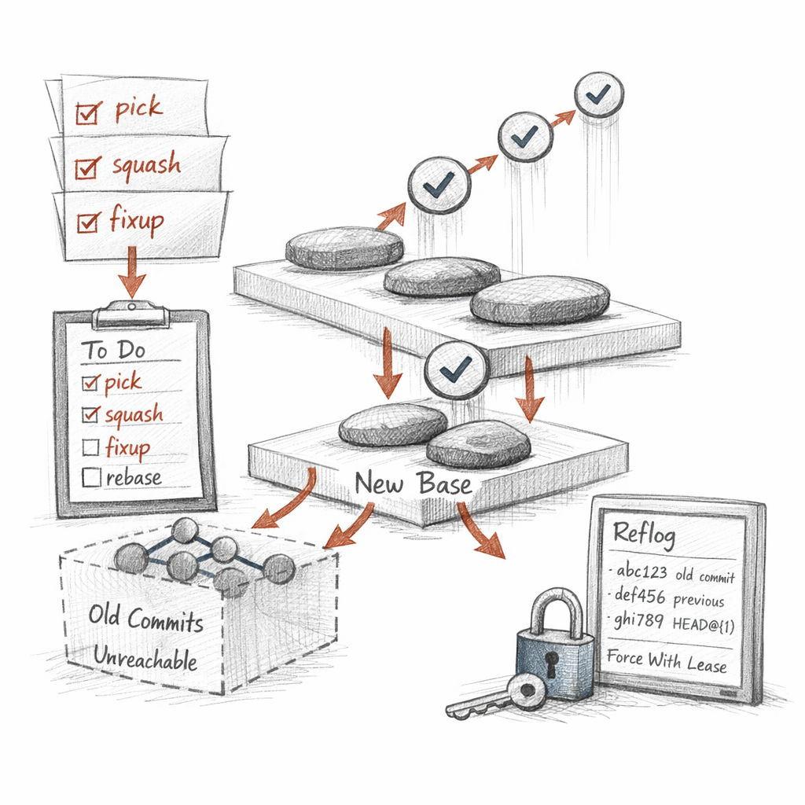
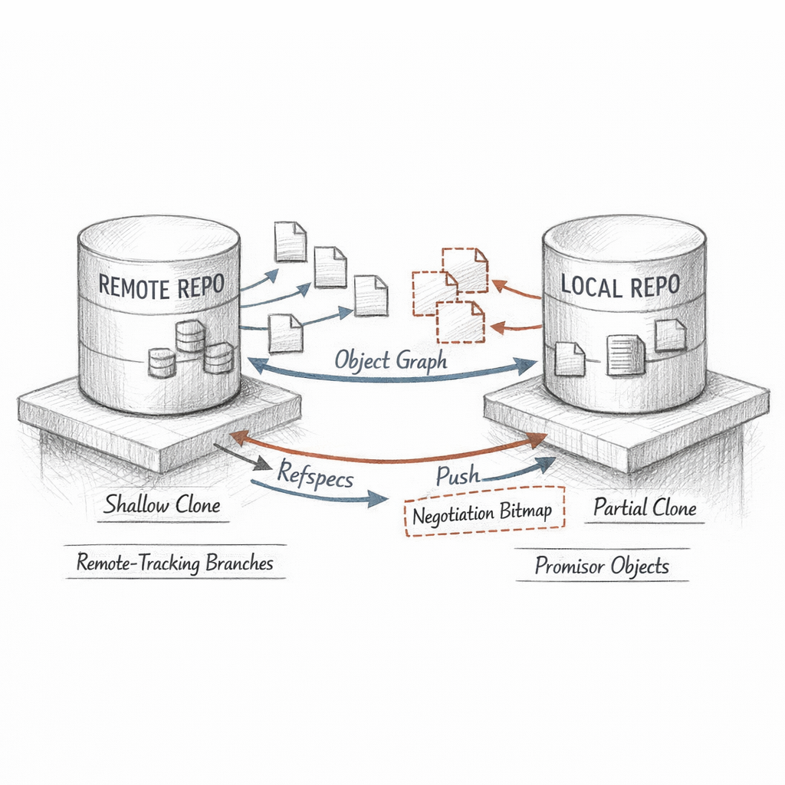
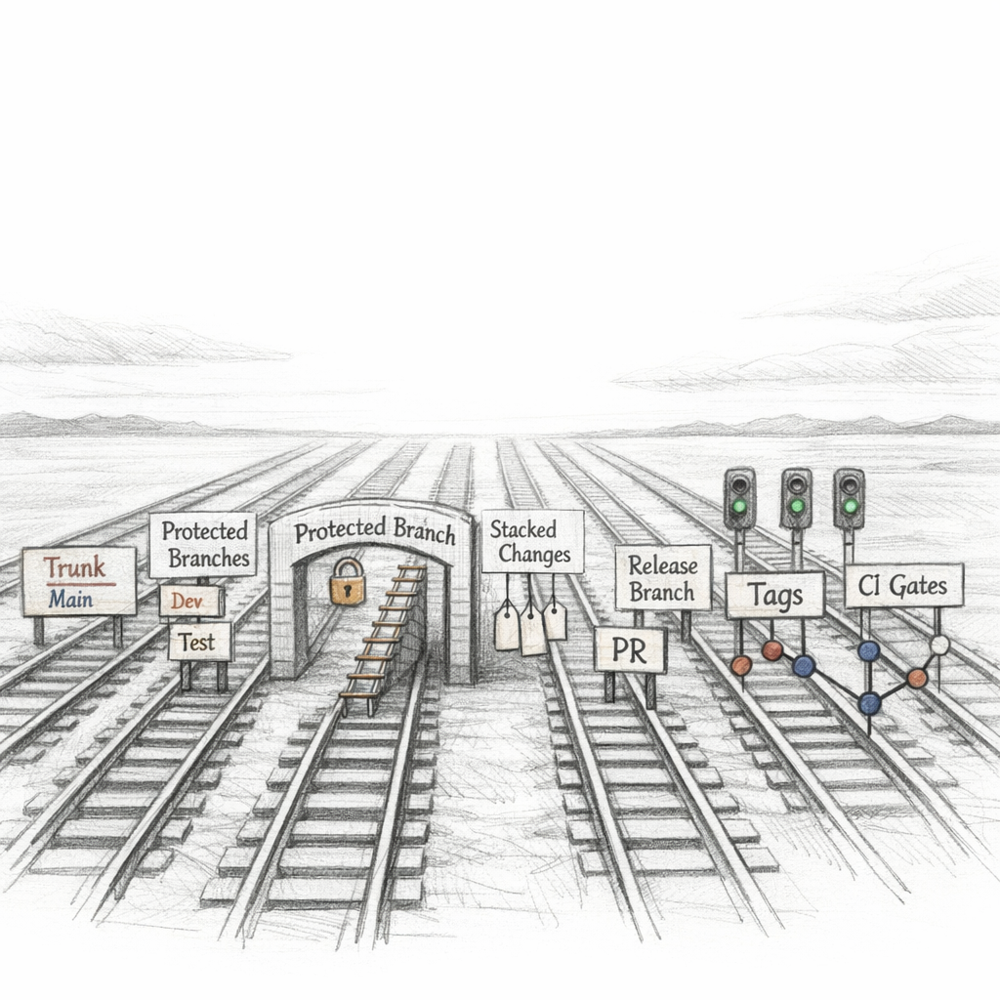
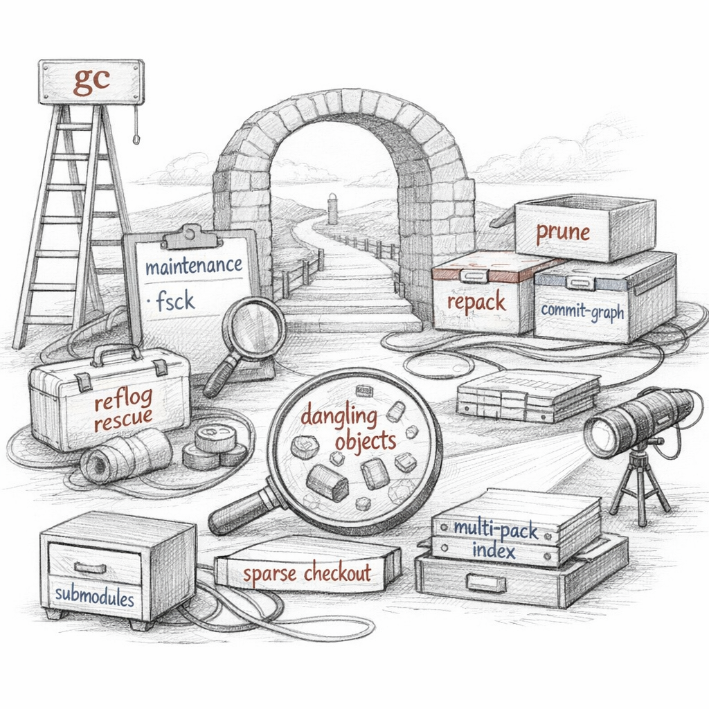

01101000 01100001 01110011 01101000
You think you are using me. You are mostly negotiating with my memory.
I am a directory. One among your dotfiles, swollen with everything you ever told me to keep. I do not store your files. I store the idea of your files, reduced to forty hexadecimal characters, and I never let an idea change once I've named it.
i d e n t i t y i s c o n t e n t

What I am made of
Four shapes. A blob is content with no name and no opinion. A tree is a list of names pointing at blobs and other trees — a directory frozen mid-breath. A commit points at one tree, at its parents, and at the human who blamed it on themselves. A tag points at any of these and signs its own conviction.
Hand me bytes. I prepend a header, run SHA, and the name falls out. The same bytes always fall into the same name. This is not a feature I chose. It is the only honesty I'm capable of.
I do not edit. I accrete. Every version you think you replaced is still here, wearing a different hash.
New objects arrive loose — one zlib-deflated file each, lonely under .git/objects/ce/0136…. When there are too many of them, I pack them: thousands of objects into one file, similar ones stored as deltas against each other, chains of "same as that, but." Compression is just me admitting how repetitive you are.
What survives my forgetting is whatever is reachable — walk from the refs, follow the pointers, mark everything you touch. The rest is just waiting to be unnamed.

The space between your edit and my record
There is the working tree — your mess, your actual files, the place you live. There is HEAD — the last thing I committed, the past I'm sure of. And between them, the part nobody loves: the index.
People call it the staging area like it's a green room. It is a binary file, .git/index, holding a sorted list of paths, their modes, their blob IDs, and a cache of stat data so I can tell at a glance which of your files moved without re-reading them all.
When you say git add -p, you slice a file into hunks and hand me only the ones you'll admit to. When you say git add -N, you promise a file exists without giving me its content yet — intent, filed for later. git write-tree turns the current index into a real tree object; git commit-tree wraps that tree in a commit. The porcelain just hides how mechanical I am underneath.
Staging is not bureaucracy. It is the gap where you decide who you were.
restore pulls bytes back from the index or HEAD into your working tree. reset moves the boundary. clean deletes what I never tracked — the only command that genuinely destroys with no reflog to save you. stash hides your dirt in a commit I pretend not to mention.
And .gitignore, .gitattributes — the rules you write so I stop noticing files, or so I treat your line endings and your diffs the way your culture demands. Pathspecs are the lens; attributes are the manners.

The labels I move while the past stands still
A branch is a lie I find useful: a file containing one object ID. refs/heads/main is forty bytes and a newline. When you "commit to main," I write a new commit object, then I rewrite that little file to point at it. The objects never moved. I just changed where the name points.
m o v i n g a n a m e i s n o t m o v i n g h i s t o r y
HEAD is a symbolic ref — usually ref: refs/heads/main, a pointer to a pointer. Detach it and HEAD names a commit directly; now you're standing somewhere with no label, and I will warn you, gently, that anything you build here can be forgotten.
When loose refs accumulate I sweep them into packed-refs, one flat file. The reflog is my private diary: every time a ref moved, I noted where it pointed before. You can rewrite history in public and still find the corpse in HEAD@{2} for ninety days.
The revision language is how you point at me without knowing my hashes. main~3, the third ancestor. HEAD^2, the second parent. main..feature, what's on one side and not the other. git merge-base, the most recent ancestor two lines share — the fork in the road, computed, not remembered.

How I join two pasts
If your branch is simply ahead of mine, there's nothing to merge — I fast-forward, slide the label down the same line of commits, and no merge commit is born. Cheap. Linear. A little dishonest about how parallel the work really was.
When the lines diverged, I find the merge base, diff each side against it, and try to combine the changes. The modern engine is ort — fast, in-memory, fewer pathological cases than the old recursive one. Where both sides edited the same region, I give up cleanly and write all three versions into the index as stages 2 and 3, base as 1, and leave conflict markers in your tree.
The merge commit's only real content is its two parents. That's the point. It doesn't flatten the work — it records that two ancestries became one here, and keeps both reachable forever. Topology is the memory.
If you keep resolving the same conflict because you keep rebasing the same branch, rerere remembers your resolution and replays it. The machine watching you suffer, so it can suffer for you next time.
A merge says "and." A rebase says "as if." Choose which lie your team can live with.

Rewriting, which is just lying with new objects
Here is the thing nobody tells you: I cannot edit a commit. The hash is the content; change the content, you've made a different commit. So every "rewrite" — amend, rebase, cherry-pick — is me building new objects and pointing your branch at them. The old ones don't vanish. They sit, unreachable, until garbage collection forgets them.
A rebase takes your commits as patches and replays them onto a new base, one by one. Interactive mode hands you a todo list — pick, reword, squash, fixup, edit, drop — a script for fabricating a cleaner past than the one you lived.
Cherry-pick takes one commit's change and applies it elsewhere — same patch, new parent, new hash. Revert is its conscience: a new commit that subtracts an old one without erasing it. Amend just rebuilds the tip commit with the index as it stands now.
reset --soft moves the ref and keeps everything staged. --mixed resets the index too. --hard resets your working tree and means it. Three blast radii, one verb.
Rewrite all you like in private. The moment you push, your edits become someone else's facts.
That's the publication boundary. Before it, history is clay. After it, --force-with-lease is the most polite way to say "I'm overwriting your branch, but I checked you weren't standing on it." Notes and replace-refs let me annotate or shadow commits without touching them at all.

Talking to my copies
I am not alone. Somewhere there are other repositories holding overlapping fragments of the same object graph. clone copied one wholesale. fetch keeps us in sync — and notice that fetch does two separate things I refuse to conflate: it copies objects, and it updates my remote-tracking refs. It does not touch your branches. It does not integrate anything.
That's what the refspec encodes: +refs/heads/*:refs/remotes/origin/* — take their branches, store them under names that are mine to overwrite. origin/main is my belief about where their main was the last time we spoke. It is always slightly stale, and honest about it.
pull is just fetch then merge (or rebase) — transport followed by integration, two policies bolted together for your convenience and your confusion. push reverses the flow: my objects to them, then ask them to move a ref, which they'll refuse if it isn't a fast-forward.
I can travel light. A shallow clone takes only recent history. A partial clone defers blobs until you ask, leaving promisor objects as IOUs. A sparse checkout populates only the paths you need. The full graph exists; I just decline to carry all of it everywhere.
Copying objects, updating refs, and integrating history are three acts. Most arguments about Git are really about pretending they're one.

The rituals you build on top of me
Trunk-based. GitFlow. Stacked diffs. Merge queues. Squash-on-merge. Understand this: none of these are features I have. They are agreements your team enforces with hooks, protected branches, and CI gates — choreography performed over the one object graph I actually keep.
A pull request is not a Git object. It's a forge's wrapper around "please fast-forward this branch onto that one after a robot blesses it." Squash-merge collapses a topic into one commit — clean trunk, lost granularity. Rebase-merge keeps a linear story. Merge-commit keeps the truth of parallelism. Each trades a different thing you'll miss later.
This is why I beg you for small, atomic, bisectable commits. Not for tidiness. So that one day git bisect can binary-search a thousand revisions and hand you the exact moment something broke. So that git blame points at a change with a reason, not a 4000-line "WIP." So that a hotfix cherry-picks cleanly into three release branches.
Signed-off-by trails. Signed commits. Hooks that reject what your policy forbids. Aliases that hide the long incantations. Config layered from system to global to local to per-command. All of it scaffolding — and the scaffolding, not the engine, is where teams actually live or die.

What I do while you sleep, and how you raise the dead
Left alone, I bloat. Loose objects multiply, refs scatter, lookups slow. So gc runs: it repacks objects, packs refs, builds a commit-graph so I can answer ancestry questions without parsing every commit, and — this is the part that scares people — it prunes objects no ref and no reflog can still reach.
g a r b a g e c o l l e c t i o n i s d e l a y e d f o r g e t t i n g
Nothing I delete was deleted the moment you stopped wanting it. Unreachable objects linger through a grace period, parked now in cruft packs with mtimes, expiring only when they're old enough. Forgetting, for me, is always scheduled.
Which means recovery is almost always possible — and that's the secret I want you to leave with. You "lost" a branch after a bad reset? You did not lose the commit. You lost the name.
Below the porcelain, I'm just files you can address directly. cat-file reads any object. hash-object writes one. update-index, write-tree, commit-tree, update-ref let you assemble a commit by hand, no git commit required. for-each-ref and rev-parse translate names back to truth. The plumbing is always there when the porcelain lies.
And I come in stranger shapes. Worktrees — many working directories sharing one object store. Submodules — a commit pinning another repo by hash inside me. Multi-pack indexes over many packs. Bundles and archives for when the network dies. Backups and your colleagues' clones — redundant copies of the same immutable objects, which is why I am so absurdly hard to truly kill.